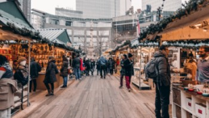

Tooele Information
Founded
Tooele was incorporated on 19 June 1853. Mormon Pioneers helped to settle Tooele, includingEzra Taft Benson, who had two groups in his employ, one caring for his livestock, the other instructed to build a sawmill and gristmill on Big Creek (Settlement) Canyon.
Population
As of 2022 the population of Tooele City is estimated to be 38,190. Tooele County population is estimated to be around 70,000.
Elevation and Area
The Elevation of Tooele is 5,043' with an area of 24.16 mi² and Tooele County area is 7,286 mi².
Climate
In Tooele, the summers are hot, dry, and mostly clear and the winters are freezing, snowy, and partly cloudy. Over the course of the year,
the temperature typically varies from 20°F to 90°F and is rarely below 7°F or above 96°F.
The best time of year to visit Tooele for warm-weather activities is from late June to early September.
Higher Education
Universities located in the area are Utah State University and Tooele Technical College.
User Visits
This keeps track of the number of times the user has visited this site.
Number of Visits:
Days since last visit:
Tooele Weather
The current temperature in Tooele, Utah is °F
Current Conditions
Wind Speed:
Feel Like Temperature:
Wind Chill Temperature:
News Release
Why Shop Local
Local retailers employ people who live in the community, not only staff but other businesses such as architects, contractors, and accountants
that will help their business thrive. They are more likely to carry goods that are locally produced. According to the American Independent
Business Alliance each dollar spent in a local store brings as much as $3.50 into the local economy.
Shopping local give the people in the community a chance to connect and get to know business owners and other people living in the area.
Shopping in the local area gives people the opportunity to help the environment by running errands on foot or bicycle. This also has the added
benefit of helping them be healthier.
The last benefit to shopping local is how it makes the community thrive and have a unique look and feel all its own.
We encourage everyone to shop local.
Join
The purpose of Tooele Community Chamber of Commerce is to provide businesses and the people living in our community with resources to help them interact
and facilitate our community to be healthy and thrive.
It is the mission of the chamber of commerce to be a catalyst for business growth and development.
Please use the navigation menu to our join page for the application to join the Tooele Community Chamber of Commerce.
Discover Tooele
Wild Life
Enjoy the experience of beautiful wild life in Tooele, including wild horses. Once you see them you will never forget it.
Outdoor Recreation
Come and enjoy the many hiking trails and scenery in Tooele. The beautiful mountains provide various trails that can accomodate all levels of ability, from the beginner to experienced.
Museums
Visit our fun mueseums in Tooele. The Pioneer museum is located on Vine St. in Tooele, The Dooner Reed Museum is located in Grantsville, The Train Museum is Located on Broadway in Tooele, and the Benson Grist Mill is Located in Stansbury Park.
Ghost Towns
Explore the towns of the old west in Tooele, such as Ophir and Jacob City.
Antique Shops
Shop at the wonderful antique shops on Main St. and Vine St. in Tooele.